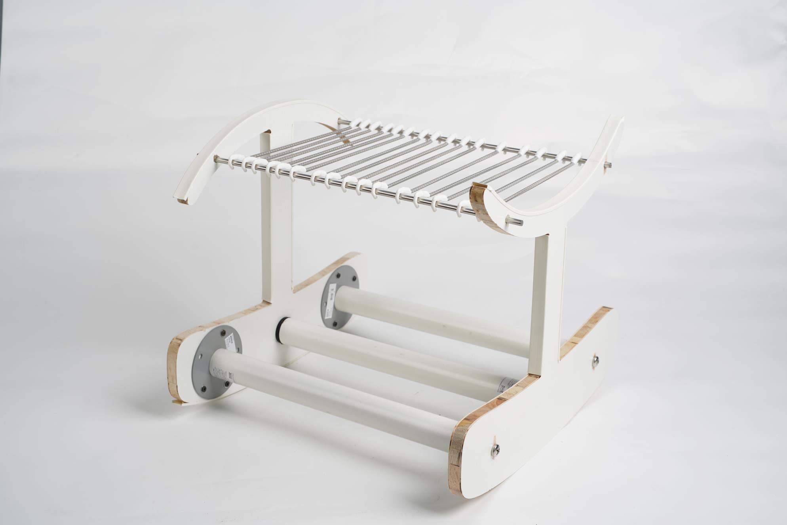
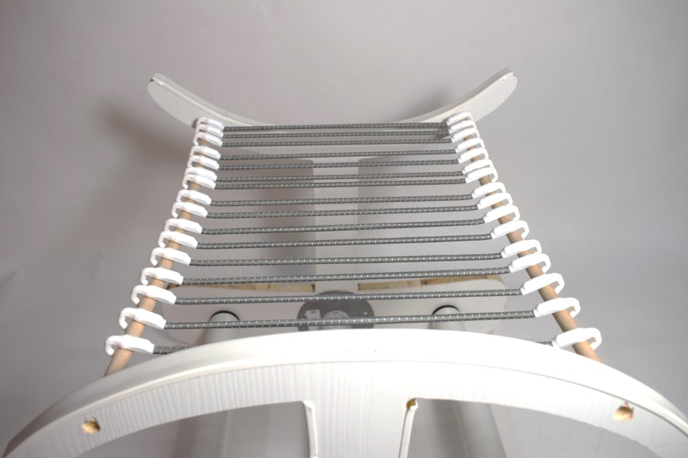
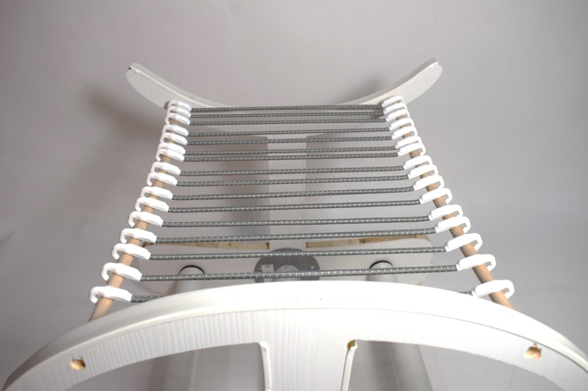
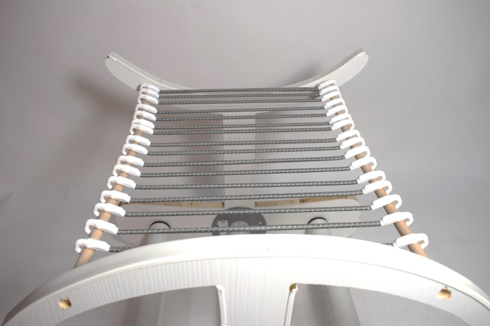

sIt:I-I
通过思考与探究改变现有凳子单一的乘坐方式与体验，反转常规的面与腿的功能，推行软、硬两种座面并行，动、静两个状态共存的设计理念，在宜家的不锈钢桌腿、松木搁板、合成橡胶弹力绳之间进行解构与构建，组成这款「sIt」凳。
Through thinking and exploring, we can change the single sitting mode and experience of the existing stool, reverse the conventional function of face and leg, implement the design concept of soft and hard seat surface parallel, and coexistence of dynamic and static states, and deconstruct and construct IKEA's stainless steel table legs, pine shelf, and synthetic rubber elastic rope to form this "sIt" stool.

 


